플랜 모드
실행 전에 계획을 검토합니다
여러 단계가 필요한 요청이면 에이전트가 먼저 3~6단계의 계획을 제안합니다.
승인하거나, 수정을 요청하거나, 취소할 수 있습니다.
MacAIterm은 실제 셸과, 같은 세션에서 동작하는 AI 에이전트를 결합했습니다.
SSH로 서버에서 작업할 때 필요한 자원 모니터링, 파일 트리, 저장된 세션도 함께 제공합니다.
MacAIterm은 터미널을 대체하지 않습니다.
직접 입력할 수 있는 실제 zsh 세션을 중심에 두고, 에이전트와 승인 절차, 서버 도구를 더했습니다.
에이전트는 지금 작업 중인 세션과 디렉터리에서 명령을 실행합니다.
파일을 읽고, 수정하고, 생성하며 모든 변경을 되돌릴 수 있는 diff로 보여 줍니다.
테스트가 실패하면 통과할 때까지, 또는 중단하고 이유를 설명할 때까지 작업을 이어 갑니다.
위험한 명령은 사용자의 승인을 기다립니다.
권한 모드 4종, 비밀 정보 마스킹, 네트워크 차단 모드, 에이전트가 실행했거나 시도한 모든 명령의 감사 로그를 제공합니다.
Ollama의 로컬 모델, OpenAI 호환 서버나 OpenAI API, 또는 ChatGPT 로그인을 쓰는 Codex CLI를 사용할 수 있습니다.
로컬 모델은 대화가 Mac 안에 머물고, 그 밖의 선택지는 선택한 제공자에게 대화를 전송합니다.
SSH로 접속하면 에이전트가 서버에서 명령 실행, 파일 편집, 검색을 수행할 수 있습니다.
서버를 변경하는 작업은 서버 이름이 표시된 승인을 거치고, 읽기 전용 확인은 즉시 실행됩니다.
탭 아래 띠에 서버의 CPU, 메모리, GPU(NVIDIA 포함), 디스크가 표시되고, Mac의 CPU, GPU, 메모리는 상단 바에 유지됩니다.
서버에서는 읽기 전용 스크립트만 실행합니다.
세션 저장, ~/.ssh/config 가져오기, 점프 호스트, X11, 포트 포워딩을 지원합니다.
서버와 Mac의 파일 트리가 나란히 열리며, 끌어다 놓으면 복사되고 모든 파일을 SHA-256으로 검증합니다.
비밀번호는 저장하지 않습니다.
모든 이미지는 실행 중인 애플리케이션을 그대로 캡처한 것입니다.
이 화면의 에이전트는 Codex CLI이며, SSH 화면은 실제 NVIDIA DGX Spark입니다.
여러 단계가 필요한 요청이면 에이전트가 먼저 3~6단계의 계획을 제안합니다.
승인하거나, 수정을 요청하거나, 취소할 수 있습니다.
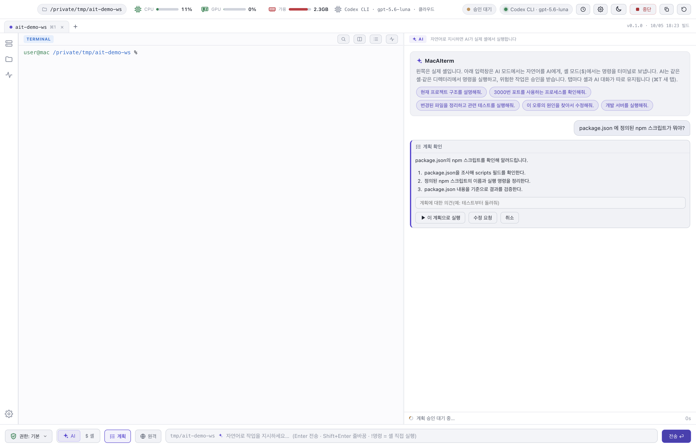
삭제, 설치, 푸시 등 시스템을 변경하는 작업은 정확한 명령과 사유를 보여 주고 승인을 요청합니다.
한 번만, 세션 동안, 또는 프로젝트 단위로 허용하거나, 거부하고 에이전트에게 사유를 전달할 수 있습니다.
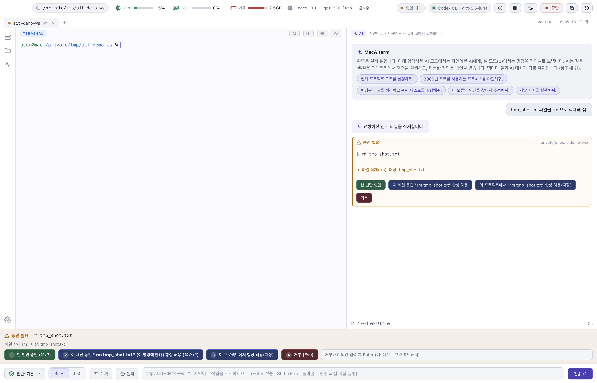
Ollama 모델은 전부 사용자의 기기에서 실행되므로 이 화면과 같은 짧은 조회에 적합합니다.
여러 단계로 이어지는 작업에는 16 GB 노트북보다 메모리가 큰 Mac이 필요합니다.
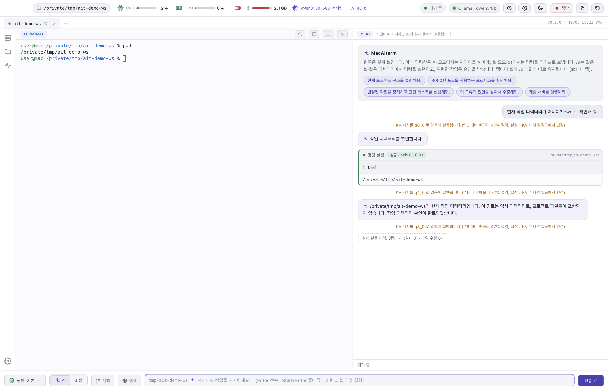
탭 아래 띠에 서버의 CPU, 메모리, GPU, 디스크가 표시되고, 상단 바에는 Mac의 수치가 유지됩니다.
두 기기의 파일 트리가 왼쪽에 열립니다.
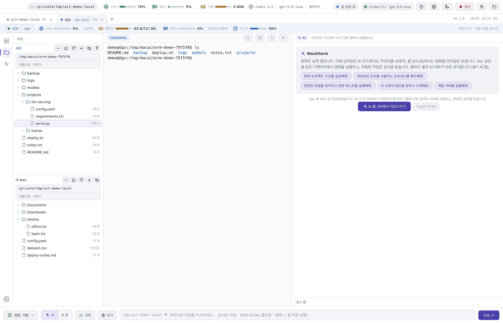
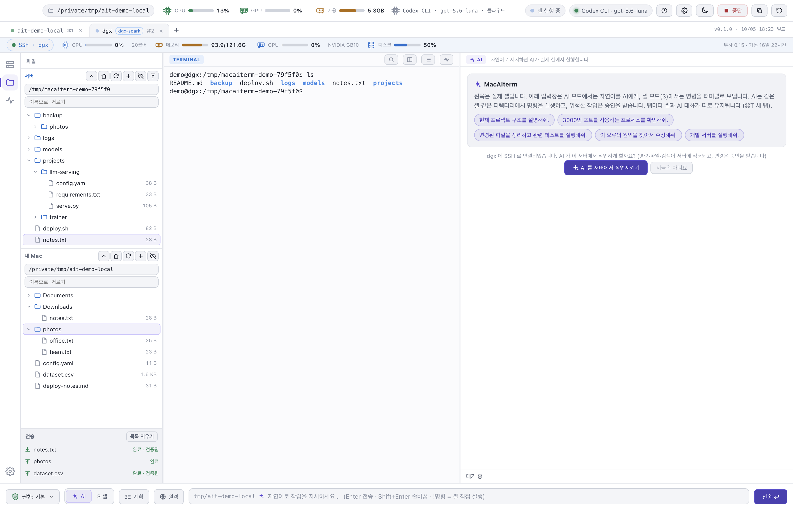
파일과 폴더 전체를 양방향으로 복사합니다.
각 파일은 기존 파일을 바꾸기 전에 SHA-256으로 검증하며, 취소한 전송이 일부만 기록된 파일을 남기지 않습니다.
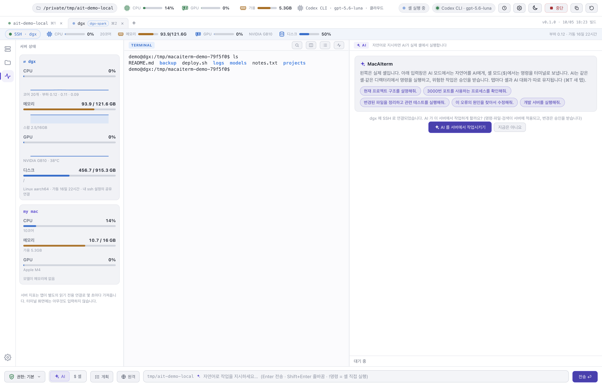
상태 패널은 최근 샘플을 그래프로 보여 주고 서버와 Mac을 비교합니다. /proc, df, nvidia-smi를 읽기만 하며 설치하거나 기록하는 것은 없습니다.
명령은 지켜보고 있는 터미널의 서버 셸에서 실행됩니다.
결과 카드에 서버와 폴더 이름이 표시되어 모든 명령이 실행된 위치를 알 수 있습니다.
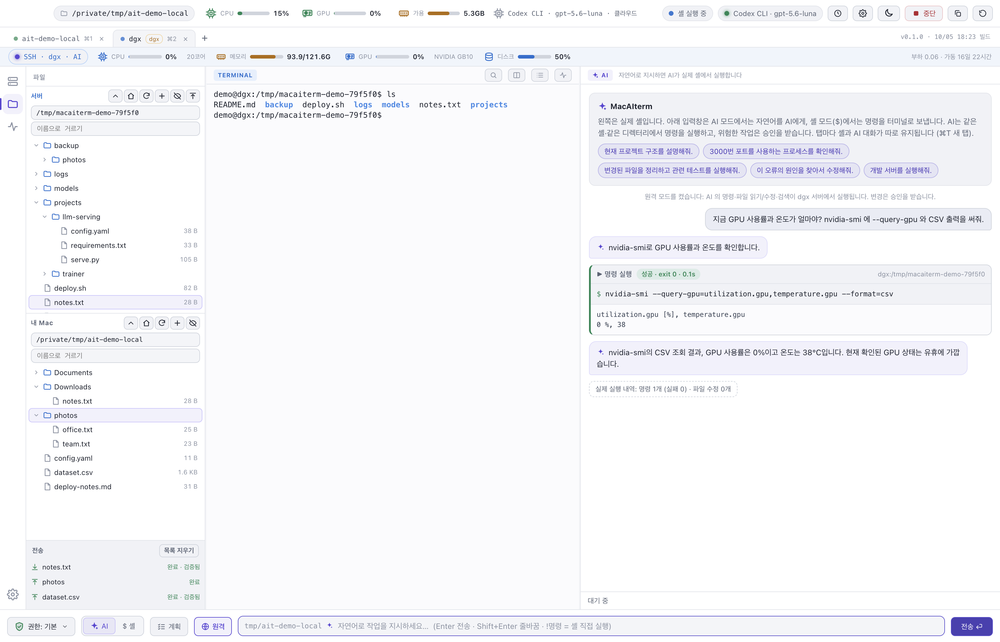
읽기 전용 확인은 즉시 실행됩니다.
서버를 변경할 수 있는 작업은 서버 이름이 표시된 승인을 먼저 받습니다.
“항상 허용” 규칙은 해당 서버와 해당 세션에만 적용됩니다.
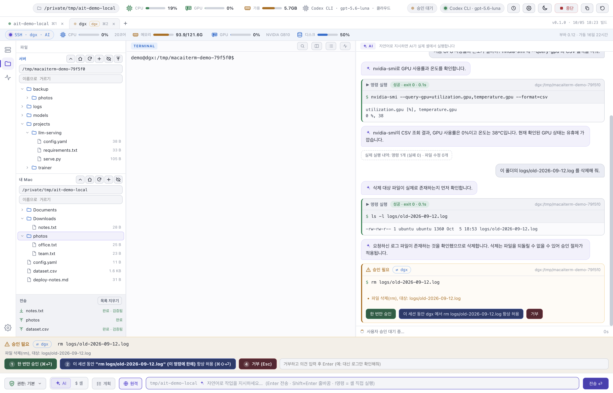
SSH 탭에서 서버의 VNC 데스크톱을 앱 안에 표시합니다.
화면 데이터는 해당 탭의 SSH 연결로만 전달되며 이 Mac에 포트를 열지 않습니다.
VNC 비밀번호는 연결할 때 입력받고 저장하지 않습니다.
AI 채팅은 이 화면을 보거나 조작하지 않습니다.
요청은 SSH 셸 명령으로 실행되고 결과는 채팅에 표시되므로, “터미널 창을 열어 줘” 같은 요청도 클릭이 아닌 명령 실행으로 처리됩니다.
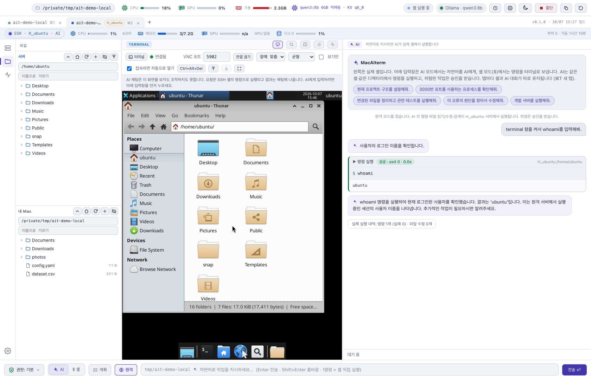
세션 패널에서 ~/.ssh/config를 창으로 열어 편집합니다.
저장하기 전에 실제 ssh -G로 문법을 검사하고, 오류는 줄 번호와 함께 표시합니다.
저장하면 호스트 목록에 바로 반영되며, 이전 내용은 시각이 붙은 백업으로 보관합니다.
그 사이 다른 곳에서 바뀐 파일은 덮어쓰지 않습니다.
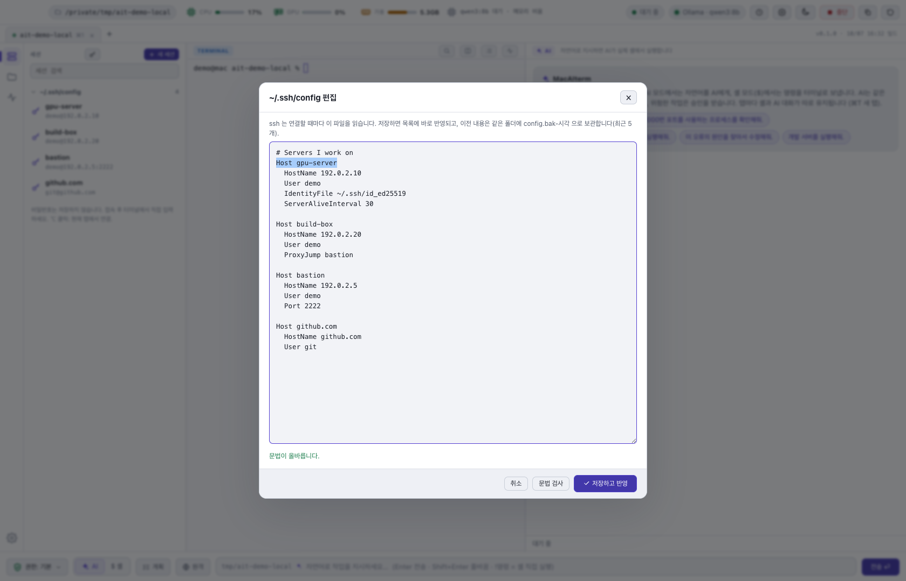
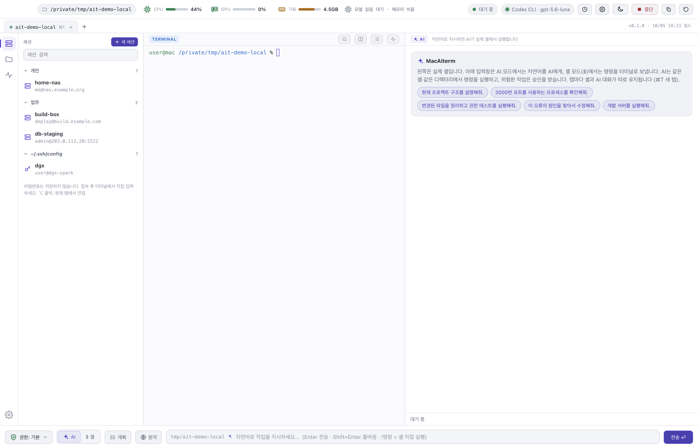
폴더로 정리한 저장 세션, ~/.ssh/config의 호스트, 최근 접속을 제공합니다.
더블클릭하면 연결됩니다.
비밀번호는 입력하는 위치인 터미널에만 남습니다.
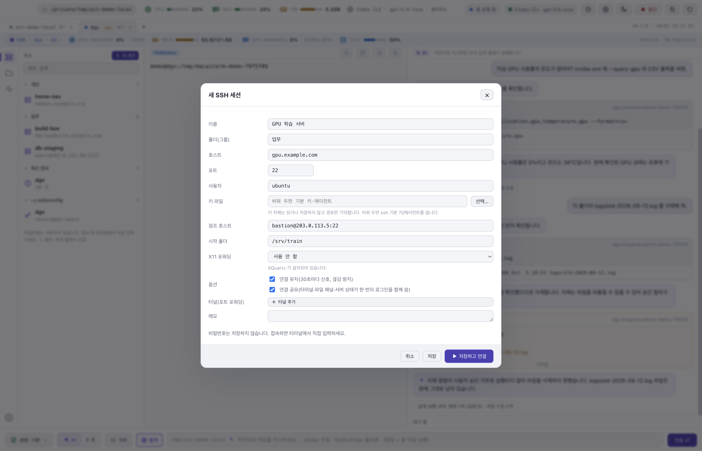
키 파일, 점프 호스트, 시작 폴더, X11, 포트 포워딩, keep-alive를 설정할 수 있습니다.
모든 입력란을 검증하므로 붙여 넣은 값이 추가 ssh 옵션으로 해석되지 않습니다.
모델은 포함되어 있지 않습니다.
에이전트를 실행할 위치를 선택하며, 상단 바의 칩에서 언제든 변경할 수 있습니다.
| 선택지 | 필요한 것 | 참고 |
|---|---|---|
| 로컬 (Ollama) | Ollama와 모델, 예: ollama pull qwen3:8b | 대화가 Mac 밖으로 나가지 않습니다. 8B 모델은 16 GB Mac에서 실행되지만 여러 단계 작업에는 느립니다. |
| OpenAI API / 호환 서버 | OPENAI_API_KEY 또는 LM Studio, llama.cpp, vLLM 같은 서버의 주소 | 컨텍스트가 해당 서버로 전송됩니다. 키는 환경 변수에서 읽거나 Keychain에 저장하며 화면에 표시하지 않습니다. |
| Codex CLI | ChatGPT로 로그인한 codex | 컨텍스트가 Codex 로그인을 통해 OpenAI로 전송됩니다. 위 화면은 이 방식으로 캡처했습니다. |
.dmg를 내려받아 MacAIterm을 응용 프로그램 폴더로 옮기고, 처음 실행할 때는 우클릭 후 열기를 선택합니다.
아직 서명하지 않은 앱입니다.
Ollama로 모델을 받거나, API 키를 입력하거나, Codex에 로그인합니다.
그다음 모델 칩에서 선택합니다.
예: “3000번 포트를 사용하는 프로세스가 무엇인가요?”, “이 테스트가 실패합니다.
수정해 주세요.”
서버에서는 평소처럼 ssh로 접속합니다.